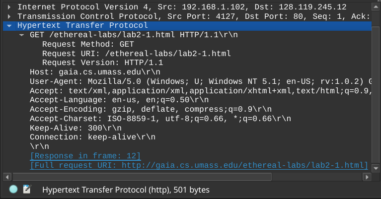

Тема:
Аналізатор пакетів даних мережевих протоколів Wireshark.
Мета:
Здобути навички роботи з програмним засобом аналізу пакетів даних (на прикладі програми-сніфера Wireshark).
Хід виконання
2. Ознайомтеся з інтерфейсом програми Wireshark. Встановіть призначення основних зон робочої області.
3. Ознайомтеся з параметрами налаштування захоплення пакетів (Capture Options) та методикою захоплення пакетів даних.
4. З’ясуйте, яким чином у Wireshark захоплювати пакети, зберігати захоплені пакети на диск та відкривати раніше захоплені пакети.
Для захоплення пакетів у Wireshark потрібно вибрати мережевий інтерфейс і натискати "Start". Захоплені пакети можна зберегти через "File → Save As..." у форматі .pcapng. Для відкриття раніше захоплених пакетів використовують "File → Open...".
5. Введіть до адресного рядка браузера адресу: http://gaia.cs.umass.edu/wireshark-labs/HTTP-wireshark-file1.html і перейдіть на задану сторінку. Ознайомтеся з текстом сторінки.
Вміст сторінки за посиланням:
6. Відкрийте у Wireshark пакет з назвою http-ethereal-trace-1. Застосуйте фільтр http до захоплених пакетів.
Відкрив файл http-ethereal-trace-1.pcap і застосував фільтр http:
7. Навчіться розкривати / згортати інформацію про вибраний тип протоколу.
Поклікав по трикутничкам:
8. Визначте кількість та вміст захоплених пакетів протоколу HTTP.
На скріншоті показано де відображається вміст пакетів і їх кількість:
На скріншоті видно, що є 4 http пакетів.
9. Ознайомтеся з текстом запиту GET протоколу HTTP. Які поля він містить?
Щоб почитати текст запиту в зручнішому вигляді можна перейти як вказано на скріншоті:
І тут текст запиту GET протоколу HTTP знаходиться в першому рядочку.
Текст цього запиту містить поля:Request Method: GET
Request URI: /ethereal-labs/lab2-1.html
Request Version: HTTP/1.1
В даному випадку цю інформацію простіше було дізнаться просто з панелі подробиць заголовку пакета:

10. Ознайомтеся з текстом відповіді Web-сервера. Яка версія HTTP-протоколу? Який статус відповіді сервера?
Які поля містить відповідь? Який вміст одержаної Web-сторінки? Яка довжина повідомлення?
Яка дата і час останньої модифікації файлу на сервері?
У випадку самостійного захоплення пакетів виконайте наступний пункт рівно один раз (один раз відкрийте сторінку і один раз поновіть сторінку).
Текст відповіді сервера можна знайти в пакеті в якого Destination це IP адреса від Source пакета який надсилав запит (тобто локальний IP комп'ютера):
Версія HTTP-протоколу: HTTP/1.1
Статус відповіді сервера: 200 OK
Поля відповіді:
Date: Tue, 23 Sep 2003 05:29:50 GMT
Server: Apache/2.0.40 (Red Hat Linux)
Last-Modified: Tue, 23 Sep 2003 05:29:00 GMT
ETag: "1bfed-49-79d5bf00"
Accept-Ranges: bytes
Content-Length: 73
Keep-Alive: timeout=10, max=100
Connection: Keep-Alive
Content-Type: text/html; charset=ISO-8859-1
Вміст одержаної Web-сторінки:.
<html>
Довжина повідомлення: 73 байти
Congratulations. You've downloaded the file lab2-1.html!
</html>
Дата і час останньої модифікації файлу на сервері: Tue, 23 Sep 2003 05:29:00 GMT
11. Введіть до адресного рядка браузера адресу: http://gaia.cs.umass.edu/wireshark-labs/HTTP-wireshark-file2.html і перейдіть на задану сторінку. Поновіть одержану сторінку (натисніть або F5).
(Я вирішив скористатись пакетами з архіву)
12. Відкрийте у Wireshark пакет з назвою http-ethereal-trace-2. Відфільтруйте пакети протоколу HTTP.
13. Дослідіть перший запит HTTP GET. Чи є в ньому поле “IF-MODIFIED-SINCE”?
В цьому запиті немає поля "IF-MODIFIED-SINCE", оскільки це перший запит до сервера, і браузер не має інформації про попередні модифікації цього ресурсу:
14. Проаналізуйте відповідь сервера. Який статус відповіді сервера і вміст повернутої сторінки?
Вміст пакета відповіді сервера:
15. Дослідіть вміст другого запиту HTTP GET. Чи є в ньому поле “IF-MODIFIED-SINCE:”? Який вміст цього поля заголовку?
В цьому запиті з'являється поле “IF-MODIFIED-SINCE:”. Це вказує на те, що браузер намагається перевірити, чи був змінений ресурс на сервері після останнього запиту. Значення цього поля — це дата та час останньої модифікації ресурсу, яку браузер отримав у попередній відповіді.
16. Який статус відповіді сервера? Який текст Web-сторінки повернув сервер цього разу?
Цього разу статус відповіді 304 Not Modified, що означає, що ресурс не був змінений з моменту останнього запиту. Сервер не повертає жодного тексту сторінки, оскільки клієнт має актуальну версію сторінки, відповідно у відповіді немає поля Content-Length або Content-Type.
Висновки
У лабораторній роботі було досліджено роботу програми Wireshark як аналізатора мережевого трафіку для протоколу HTTP.
Основні інструменти Wireshark:
- фільтрація пакетів за протоколами;
- аналіз структури HTTP-запитів і відповідей;
- відстеження параметрів запиту (Request Method, URI, Version);
- дослідження полів відповіді сервера (Status Code, Content-Length, Date, Last-Modified);
- використання функції Follow HTTP Stream для перегляду повного діалогу між клієнтом і сервером.